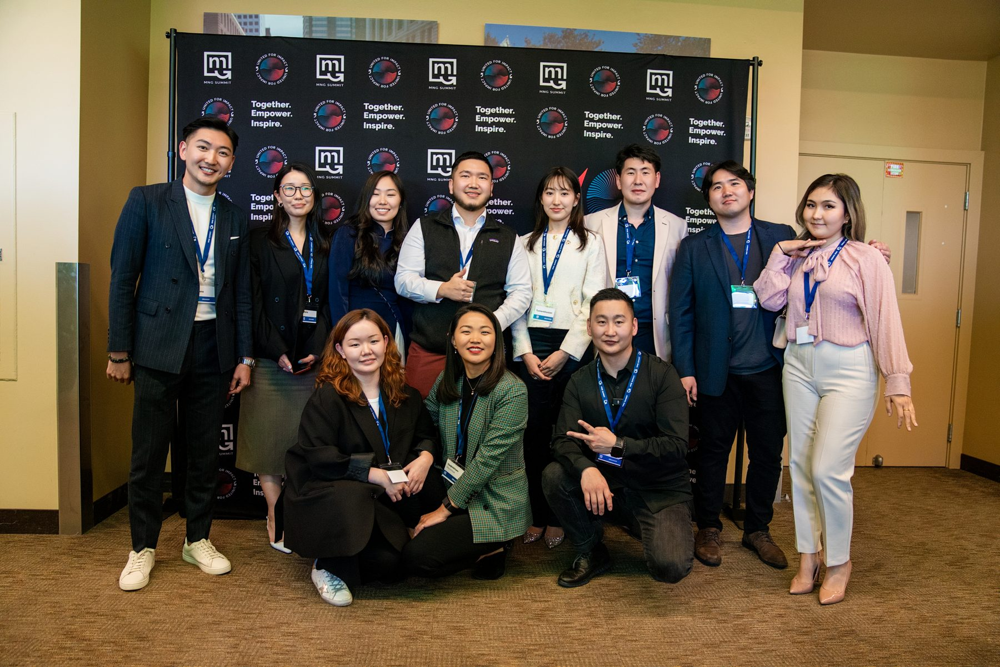

A career fair in a Chicago classroom in 2014 became a national movement. Every chapter on this page was carried by volunteers, sustained by community, and remembered by the people who showed up. Click any year to step inside.
Est. 2014 · Volunteer-run · Always recruiting.
MNG Summit began life in 2014 as the Mongolian American Career Fair (MACF) in Chicago, a scrappy, all-volunteer effort to connect Mongolian students in the U.S. with companies that would actually hire them. By 2016, MACF merged with NHUB (Надад Хэлэх Үг Байна, the speech competition that had been running since 2011) to become the Mongolian Next Generation Summit. Two events, one weekend, one community.
Twelve years later, the through-line is unchanged: empower, encourage, engage. Every page in this collection was earned by the people who showed up to build it. Some details below come from our records, some from the way the internet remembered us. If you spot something missing, email contact@mngsummit.org and we'll fix it.
The tenth-anniversary chapter, three days at USF McLaren, March 2024.
Three days at USF McLaren. Bold Baatar (Rio Tinto), Otgo Erhemjamts (USF Dean), Munkhbaatar Begzjav (Consul General), and DJ BEME closing the anniversary gala with dark techno × Mongolian fusion.

Every chapter from the seed in Chicago to the tenth-anniversary retreat in San Francisco. A pandemic pause from 2020–2021 didn't stop us. Click any year to step inside.
The first NYC flagship since 2019. New leadership. A new format. A 10-year arc closing where the diaspora's center of gravity has shifted, and where the next decade begins.
This collection is built from the records we kept and the corners of the internet that remembered us. If you attended, spoke, volunteered, or just walked past, we want what you have. Photos, programs, anecdotes, names we missed. Email contact@mngsummit.org and we'll add it to the right page.